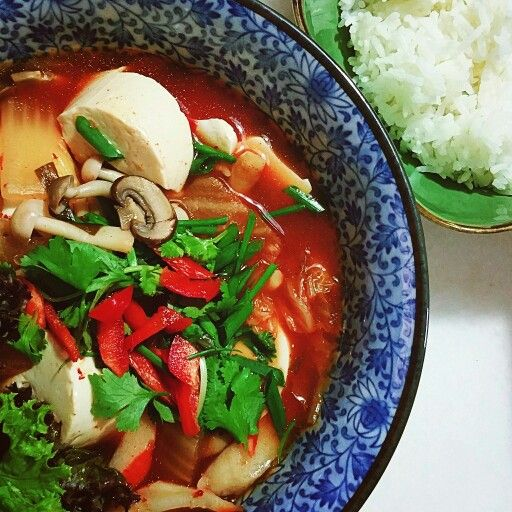

Spicy Kimchi Jigae recipe!

Delicious kimchee soup, easy to make, and very filling! Perfect for cold weather days.
Ingredients
- 2 cups chopped kimchi
- 1 cup water
- 1 tablespoon brown sugar
- 4 cloves garlic, minced
- ½ pound pork belly, cut into bite-size pieces
- 1 (12 ounce) can fully cooked luncheon meat (such as SPAM®), cubed (Optional)
- ¼ cup kochujang (Korean hot sauce) (Optional)
- 1 (12 ounce) package silken tofu
- 1 (3 ounce) package enoki mushrooms
Steps
- Combine kimchi, water, sugar, and garlic in a large skillet over medium-high heat. Bring to a boil. Stir in pork belly, luncheon meat, and kochujang. Add tofu and mushrooms; stir carefully so you don't break up the tofu. Reduce heat to medium-low. Cook until kimchi is softened and pork is slightly pink in the center, 20 to 30 minutes.